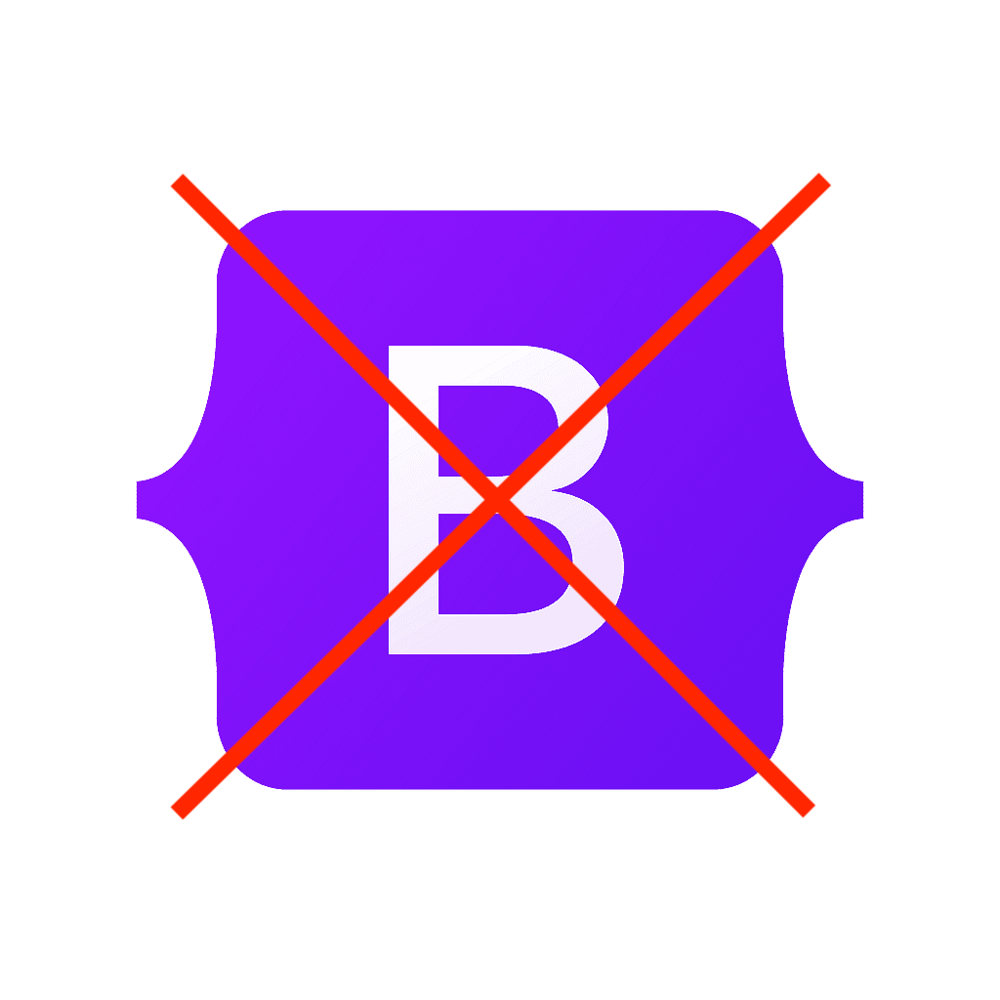
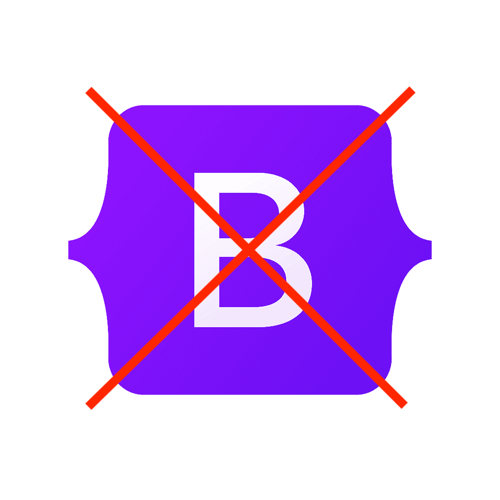

Indiana Jones et le Temple Maudit d’Angular
1O ans d'Aventures et les Bonnes Pratiques en v19
Pierre FERVEL
BreizhCamp - 27 juin 2025

Pierre FERVEL
Développeur Fullstack Angular / Java
🏆 Angular, un framework front-end majeur depuis près de 10 ans
🎯 Objectifs de cette présentation
- Les grandes étapes de l'évolution d'Angular
- Les nouveautés clés et leur impact sur les applications modernes
- Pleins de bonnes pratiques pour écrire du code Angular performant et maintenable
🌱 Les débuts des frameworks front-end

🧩 jQuery et la jungle du web

$(document).ready(function() {
$('#myButton').click(function() {
alert('Button clicked!');
});
});🧪 AngularJS, un framework révolutionnaire qui aura marqué une génération de développeurs
angular.module('myApp', [])
.controller('MyController', function($scope) {
$scope.greeting = 'Hello, World!';
$scope.updateGreeting = function(newGreeting) {
$scope.greeting = newGreeting;
};
});🔁 Le passage difficile d'AngularJS à Angular 2
Un reboot complet, plus brutal que le Crâne de Cristal pour plus de performance et de modularité
Exit le $scope
Exit le JS, désormais on utilise Typescript
import { Component } from '@angular/core';
@Component({
selector: 'app-root',
template: ``<h1>{{ greeting }}</h1>``,
styles: [`h1 { font-family: Lato; }`]
})
export class AppComponent {
greeting = 'Hello, Angular 2!';
}
🔁 Avec Angular 2, arrive zone.js, pour mieux contrôler ton DOM
Simplifier le déclenchement des changements d'état
Intercepter tous les événements asynchrones de l'application
Résultat : Les développeurs n'ont pas besoin de gérer manuellement quand l'UI se met à jour
📦 Ainsi que le bundler officiel d'Angular : Webpack
Compiler, minifier, et regrouper les fichiers JS/TS, CSS, assets, etc.
Gérer le code splitting, le lazy loading…
Intégration ultra configurable, surtout via la CLI d'Angular

📦 Angular 4 à 8 : L'âge d'or
Une stabilité maîtrisée qui entraîne des évolutions
Améliorations des performances, meilleure gestion des dépendances

📦 Les modules avec la directive @NgModule
import { NgModule } from '@angular/core';
import { CommonModule } from '@angular/common';
import { CartComponent } from './cart.component';
@NgModule({
imports: [
CommonModule
],
declarations: [CartComponent]
})
export class CartModule { }
💤 Le lazy loading
// app-routing.module.ts
import { NgModule } from '@angular/core';
import { RouterModule, Routes } from '@angular/router';
import { OrdersModule } from './orders/orders.module';
import { CartModule } from './cart/cart.module';
const routes: Routes = [
{
path: 'orders',
loadChildren: () => import('./orders/orders.module').then(m => m.OrdersModule)
}
{
path: 'cart',
loadChildren: () => import('./cart/cart.module').then(m => m.CartModule)
}
];
@NgModule({
imports: [RouterModule.forRoot(routes)],
exports: [RouterModule]
})
export class AppRoutingModule { }
// app.module.ts
import { NgModule } from '@angular/core';
import { CommonModule } from '@angular/common';
import { AppRoutingModule } from './app-routing.module';
@NgModule({
imports: [
CommonModule,
AppRoutingModule
]
})
export class AppModule { }
📈 Les Observables
import { Component } from '@angular/core';
import { Observable, of } from 'rxjs';
import { map } from 'rxjs/operators';
@Component({
selector: 'app-observable-example',
template: `
<div>
<p>Valeur : {{ value }}</p>
<button (click)="fetchData()">Charger les données</button>
</div>
`
})
export class ObservableExampleComponent {
value: string = 'Aucune donnée';
fetchData() {
this.getData().pipe(
map(data => `Données récupérées : ${data}`)
).subscribe(result => {
this.value = result;
});
}
getData(): Observable<string> {
return of('Données de l\'API');
}
}
🔄 RxJS : La colonne vertébrale réactive d'Angular
Pourquoi c'est important ?
- RxJS est utilisé dans Angular pour tout ce qui est asynchrone : HTTP, événements, formulaires…
- Permet de composer et transformer des flux de données dans le temps
- Déclaratif, testable, puissant → idéal pour des applications complexes
Exemple de comparaison
Sans RxJS (Promise)
await http.get('/api/user').then(user => {
if (user.active) {
this.doSomething(user)
}
});
Avec RxJS
this.http.get('/api/user').pipe(
filter(user => user.active),
tap(user => this.doSomething(user))
).subscribe();
🧰 Les opérateurs RxJS les plus utiles
| 🔧 Opérateur | 📋 Description |
|---|---|
| map | Transformer une valeur |
| filter | Filtrer certaines valeurs |
| switchMap | Annule le flux précédent si un nouveau arrive |
| debounceTime | Temporise avant d’émettre |
| combineLatest | Combine plusieurs flux |
| catchError | Gère les erreurs sans casser le flux |
| tap | Effets de bord (logs, méthodes) |
🎨 Angular Material
Angular Material basé sur les versions d'Angular
 

⏩ Quelques autres grandes évolutions de 4 à 7:
Angular 4
- Amélioration des guards, des resolvers, des composants plus spécifiques
Angular 5
- Introduction du support des PWA (Progressive Web App)
Angular 6
- Gestion de l'ajout de dépendances npm
- Possibilité de réaliser des tests unitaires
Angular 7
- Mise à jour globale et sécurisée des dépendances (`ng update`)
🚀 Angular 9 à 12 : L'ère Ivy

🚀 Ivy, un moteur de rendu révolutionnaire
Optimisation des performances et de la taille des bundles
Données basées sur Angular 11 apps, avec AOT + optimisation.
🌳 Ca fonctionne comment le Tree-Shaking ?
Avant le build, toutes les lignes du code sont là... mais seules certaines sont utilisées
// big-lib/ AVANT :
├── core/
│ ├── utils.js ✅ utilisé
│ └── helpers.js ❌ inutilisé
├── components/
│ ├── Button.js ✅ utilisé
│ └── Tooltip.js ❌ inutilisé
└── themes/
├── dark.js ❌ inutilisé
└── light.js ✅ utilisé
// bundle final APRÈS tree-shaking :
├── core/utils.js
├── components/Button.js
└── themes/light.js
// mon fichier AVANT compilation
import { usefulFn } from 'big-lib/utils';
import { unusedFn } from 'big-lib/helpers';
usefulFn();
// mon fichier final APRÈS tree-shaking (Ivy + Terser)
import { usefulFn } from 'big-lib/utils';
usefulFn();
⚡ Suivi des évolutions de TypeScript (3.7 -> 4.2)
🧱 Angular 13 à 19 : Retour vers le futur des frameworks front-end

@Component({
selector: 'app-cart',
template: '
Your cart and the products you ordered
-
{{ product.name }} - {{ product.price | currency }}
'
standalone: true,
imports: [CommonModule, CartProductPipe, ProductComponent],
providers: [ProductService]
})
my-app/
├── src/
│ ├── app/
│ │ ├── app.component.ts
│ │ └── app-routing.module.ts
│ ├── products/
│ │ ├── pipes/
│ │ │ ├── cart-product.pipe.ts
│ │ ├── components/
│ │ │ ├── product.component.ts
│ │ │ └── cart.component.ts
│ │ ├── services/
│ │ │ └── product.service.ts
│ │ └── products-routing.module.ts
│ ├── orders/
│ │ ├── components/
│ │ │ ├── order-form.component.ts
│ │ │ └── order-confirmation.component.ts
│ │ ├── services/
│ │ │ └── order.service.ts
│ │ └── orders-routing.module.ts
│ └── main.ts
├── webpack.config.js
└── package.json
👥 Module Federation d'un peu plus près : partager un UserComponent
Deux apps, un seul module utilisateur... et aucun duplicata ! 🚀
<app-user-profile>
import('userApp/UserComponent')
.then(m => m.UserComponent);
➕ Affiche le profil utilisateur
<app-user-admin>
import('userApp/UserComponent')
.then(m => m.UserComponent);
➕ Gère l'utlisateur depuis le backoffice
📦 userApp (Remote)
UserComponent est exposé une seule fois et utilisé par plusieurs modules, librairies, applications, etc...
sans duplication, sans recompilation, sans couplage fort.
🧠 Résultat : maintenance centralisée, mise à jour instantanée, micro-frontend modulaire.
🚫 Bye bye zone.js ?
❓ C'était quoi zone.js ?
- Librairie utilisée pour détecter automatiquement les changements d'état
- Angular 2 s’en est servi pour faire fonctionner le change detection
- Magique… mais complexe à debugger et coûteux en performance
💡 Pourquoi Angular s'en éloigne ?
- Signals (Angular 16+) rendent le state tracking explicite
- Amélioration des perfs grâce à une détection fine des changements
- Moins de framework magic ➜ code plus prévisible
- zone.js est désormais optionnel (depuis Angular 16)
🧩 On résume ?

📊 Timeline d’Angular (2010–2025)
2010
AngularJS (v1)
2016
Angular 2 (réécriture TS)
2017
Angular 4 (@NgModule, LazyLoading)
2018
Angular 6/7 (rythme semestriel)
2020
Angular 9 (Ivy par défaut)
2022
Angular 13/14 (fin ViewEngine)
2023
Angular 15/16 (Standalone APIs)
2024
Angular 17/18 (Vite, Signals+)
2025
Angular 19/20 (linkedSignal)
? Anecdote impromptue
Mais pourquoi Angular s'appelle Angular ?
< ><ng-template> </ng-template>
⚖️ AngularJS vs Angular 20 : 15 ans de transformation
AngularJS (2010)
🔧 Tout dans le HTML
<!DOCTYPE html>
<html ng-app="myApp">
<head>
AngularJS Counter
</head>
<body>
{{ count }}
<script>
angular.module('myApp', []);
angular.module('myApp').controller('AppController',
function($scope) {
$scope.count = 0;
$scope.increment = function() {
$scope.count++;
};
});
</script>
</body>
</html>
Angular 4 (2017)
🔧 Module, Composant
@NgModule({
declarations: [AppComponent],
imports: [BrowserModule],
bootstrap: [AppComponent]
})
export class AppModule {}
@Component({
selector: 'app-root',
template: `
{{ count }}
`
})
export class AppComponent {
count = 0;
increment() {
this.count++;
}
}
Angular 20 (2025)
🔧 Standalone + Signals
@Component({
selector: 'app-root',
imports: [CommonModule],
template: `
{{ count() }}
`
})
export class AppComponent {
count = signal(0);
inc = () => this.count.update(c => c + 1);
}
📁 Structure
src/
├── app/
│ ├── app.module.ts
│ ├── app.component.ts
│ └── shared/
│ │ └── button/
│ │ │ └── button.component.ts
│ │ └── shared.module.ts
│ └── services/
│ │ └── data.service.ts
│ └── features/
│ └── dashboard.component.ts
└── main.ts
📁 Nouvelle structure simplifiée
src/
├── app/
│ ├── app.component.ts
│ └── shared/
│ │ └── button/
│ │ │ └── button.component.ts
│ └── services/
│ │ └── data.service.ts
│ └── features/
│ └── dashboard.component.ts
└── main.ts
🌟 Les bonnes pratiques actuelles pour donner un bon coup de fouet à vos applications

Dependency Injection
//monservice.service.ts
import { Injectable } from '@angular/core';
@Injectable({
providedIn: 'root'
})
export class MyService {
getData() {
return 'Hello from MyService';
}
}
// moncomposant.component.ts
import { Component } from '@angular/core';
import { MyService } from './monservice.service';
@Component({
selector: 'app-dependency-injection',
template: '<p>{{ data }}</p>'
})
export class DependencyInjectionComponent {
myService = inject(MyService);
data = this.myService.getData();
}
Typed Forms
import { Component } from '@angular/core';
import { FormBuilder, FormGroup, Validators } from '@angular/forms';
interface User {
name: string;
email: string;
age: number;
}
@Component({
selector: 'app-user-form',
})
export class UserFormComponent {
userForm: FormGroup;
constructor(private fb: FormBuilder) {
this.userForm = this.fb.group({
name: ['', Validators.required],
email: ['', [Validators.required, Validators.email]],
age: [null, [Validators.required, Validators.min(0)]],
}) as FormGroup<User>;
}
onSubmit() {
if (this.userForm.valid) {
const userData: User = this.userForm.value;
console.log(userData);
}
}
}
Standalone Components
import { Component } from '@angular/core';
import { CommonModule } from '@angular/common';
import { RouterModule } from '@angular/router';
@Component({
selector: 'app-standalone',
template: '<h1>Standalone Component</h1>'
standalone: true,
imports: [CommonModule, RouterModule]
})
export class StandaloneComponent {
constructor() {
console.log('Standalone Component Initialized');
}
}
Structural Control Flow Syntax
Fini les directives *ngIf, *ngFor, *ngSwitch
@if (user.isLoggedIn) {
<p>Bienvenue, {{ user.name }} !</p>
} @else {
<p>Veuillez vous connecter.</p>
}
@for (let item of items; track item.id) {
<li>{{ item.name }}</li>
}
@let currentDate = today() {
<p>Nous sommes le {{ currentDate }}</p>
}
Signals
Changement dans le binding @Input, @Output, @Viewchild
import { Component, signal } from '@angular/core';
@Component({
selector: 'app-signals',
template: `
<p>Count: {{ count() }}</p>
<button (click)="increment()">Increment</button>
`
})
export class SignalsComponent {
count = signal(0);
increment() {
this.count.update(value => value + 1);
}
}
👴 Avant : Inputs & Outputs classiques
import { Input, Output, EventEmitter } from '@angular/core';
@Input() name: string = '';
@Output() nameChanged = new EventEmitter<string>();
changeName(newName: string) {
this.name = newName;
this.nameChanged.emit(newName);
}🆕 Maintenant : avec Signals
import { input, output, signal } from '@angular/core';
name = input<string>();
nameChanged = output<string>();
changeName(newName: string) {
this.name.set(newName);
this.nameChanged.emit(newName);
}Shared Linked Signals
// user.state.ts
import { signal } from '@angular/core';
export const userAuthSignal =
signal({ isAuthenticated: false, user: null });
export function login(user: any) {
userAuthSignal.set({ isAuthenticated: true, user });
}
export function logout() {
userAuthSignal.set({ isAuthenticated: false, user: null });
}
// app.component.ts
import { userAuthSignal, logout } from '@state/user.state';
@Component({
selector: 'app-linked-signals',
template: `
`,
})
export class LinkedSignalsComponent {
userAuthSignal = userAuthSignal;
handleLogout() {
logout();
}
handleLogin(user: any) {
login(user);
}
}
defer()
// data.service.ts
import { Injectable } from '@angular/core';
import { of } from 'rxjs';
import { delay } from 'rxjs/operators';
@Injectable({
providedIn: 'root',
})
export class DataService {
fetchData() {
return of('Données récupérées !').pipe(delay(2000));
}
}
// data-fetcher.component.ts
import { Component } from '@angular/core';
import { defer } from 'rxjs';
import { DataService } from './data.service';
@Component({
selector: 'app-data-fetcher',
template: `
@if (data) {
Données : {{ data }}
}
`,
})
export class DataFetcherComponent {
data: string | null = null;
constructor(private dataService: DataService) {}
loadData() {
defer(() => this.dataService.fetchData()
.subscribe((result) => {
this.data = result;
})
);
}
}
Conclusion
Quel avenir pour le framework ?

| Période | Versions | 👥 Taille de l’équipe (Google) | 📈 Volume de projets | 🌍 Contexte |
|---|---|---|---|---|
| 2009–2015 | AngularJS | Projet interne (Misko + 1–2 devs) | Quelques centaines par an | Débuts expérimentaux avec AngularJS |
| 2016–2020 | 2 à 9 | 20–50 personnes | ~50 000 à 300 000 dépôts/an | Croissance stable, Angular 2+, Ivy, adoption en entreprise |
| 2021–2023 | 10 à 16 | 80–100 personnes | 400 000 dépôts/an~2,9 M sites maintenus | Adoption massive, Architecture micro-frontends, signaux |
| 2024–2025 | 2024–2025 | ≈ 100 personnes | 700 000 dépôts/an~2,5 M downloads ng/semaine | Écosystème mature, croissance par stabilité, SSR, tooling, performance… |